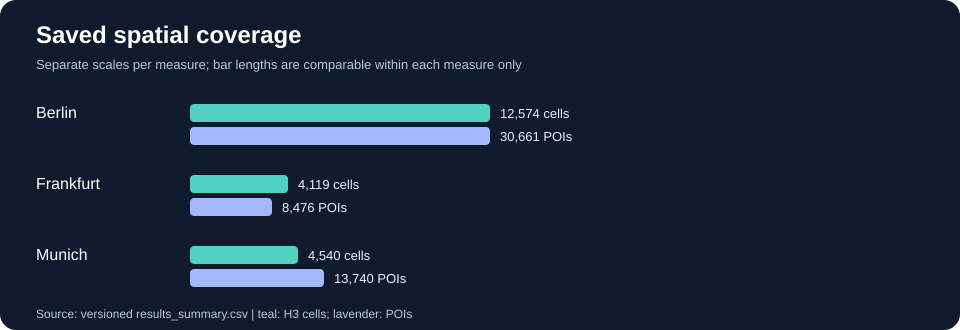

Where should the next urban food market open?
A transparent spatial decision-support prototype exploring demand, competition and potential underserved locations across Berlin, Frankfurt and Munich.
Oliver Wyman × STADS Data & Analytics Hackathon 2026 · Collaborative team project · Portfolio edition independently maintained by Katharina Luran Chen.
Saved results at a glance
All figures below come from versioned project artifacts; no new model run is implied.
| City | H3 cells | OSM POIs | Sites | Top-cell POI share¹ | PCA PC1 variance² |
|---|---|---|---|---|---|
| Berlin | 12,574 | 30,661 | 5 | 83.6% | 81.4% |
| Frankfurt | 4,119 | 8,476 | 5 | 81.7% | 75.4% |
| Munich | 4,540 | 13,740 | 5 | 68.3% | 79.8% |
¹ Internal plausibility statistic, not a revenue forecast. ² Dimensionality-reduction diagnostic, not predictive accuracy.

How the model works
Zensus 2022 demographics and OpenStreetMap points of interest are prepared for H3 spatial aggregation.
Distance-sensitive accessibility, competitive intensity and a Huff-inspired demand-allocation approach inform location scoring.
Count regression, PCA diagnostics and internal plausibility checks help interrogate the spatial patterns.
Compare candidate sites and assumptions through an interactive Streamlit application.
Stored regression diagnostics
Out-of-sample explained deviance, as recorded in the model report
Poisson: 47.43% · Negative binomial: 51.30% · Spatial negative binomial: 51.20%
The stored report selects negative binomial. These are model-specific reported diagnostics; selection bias and spatial dependence limit interpretation.
Methodological boundaries
This is an exploratory hackathon prototype, not a commercially validated location or investment recommendation. The uploaded files include stored results and structural tests; clean-environment end-to-end recomputation and independent live-deployment verification remain outstanding. Synthetic demonstration outputs, where used, must not be presented as empirical results.
Provenance and credit
Original team repository: annaantoniya/ow_hackathon_group1. This portfolio edition documents and presents a collaborative hackathon project; it does not claim sole authorship of the underlying team work.